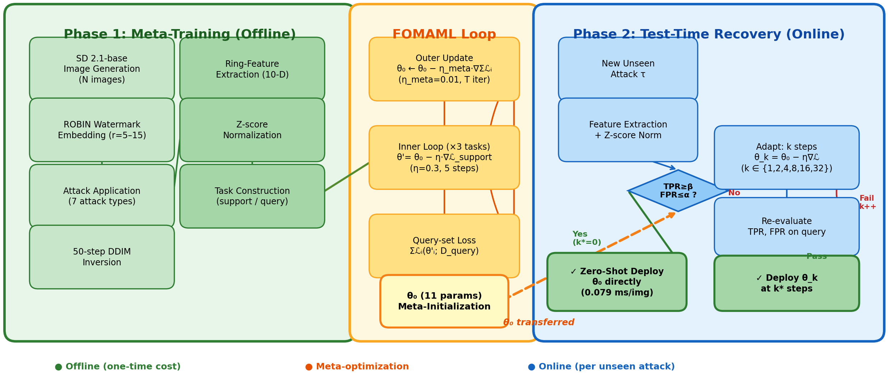
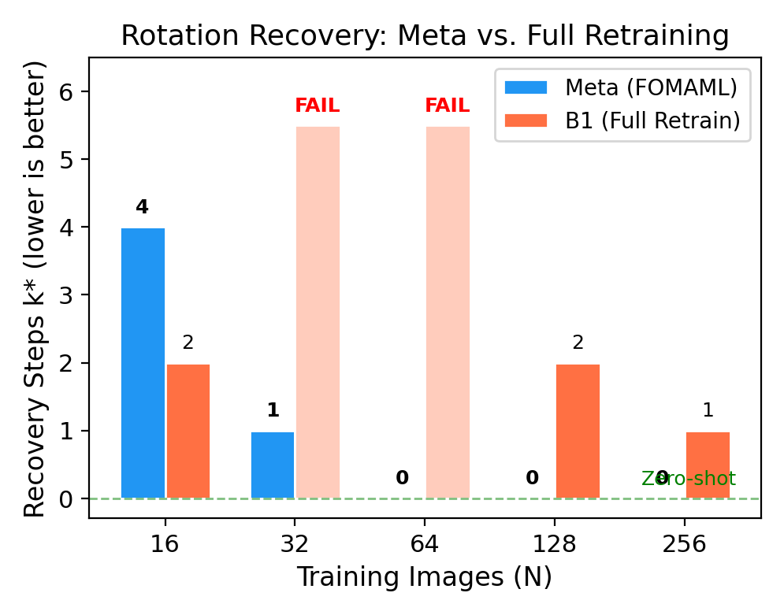
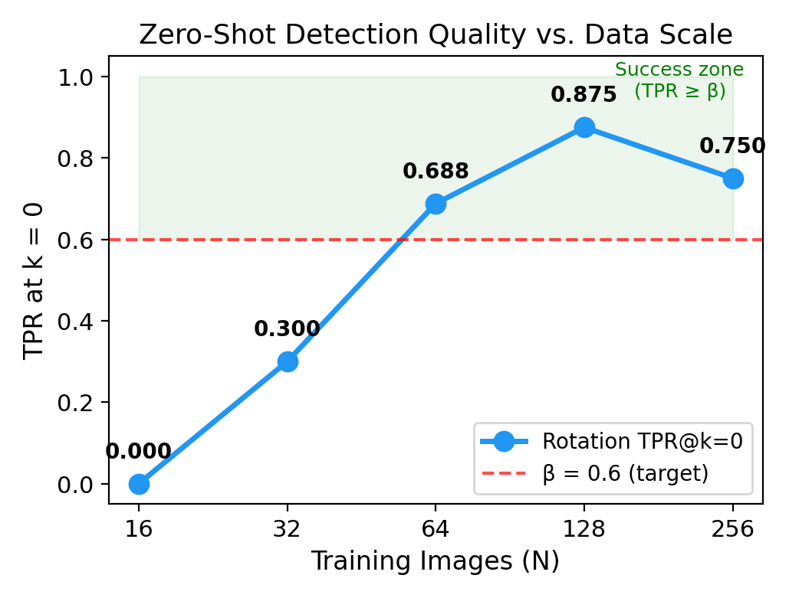
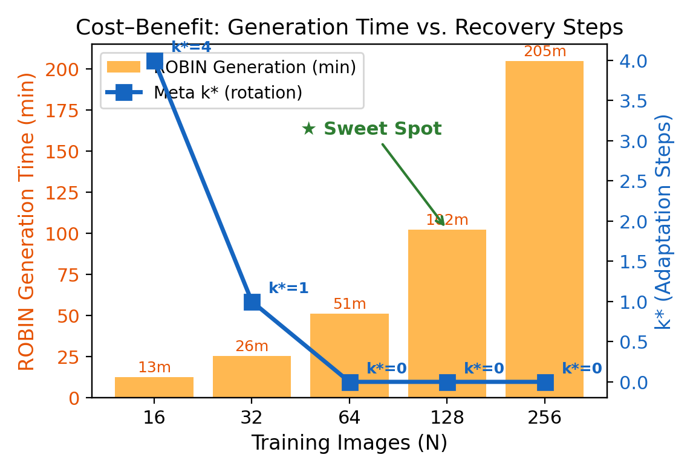
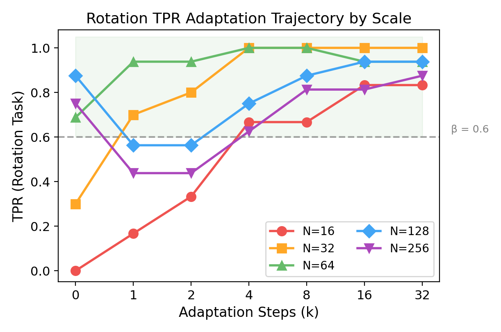
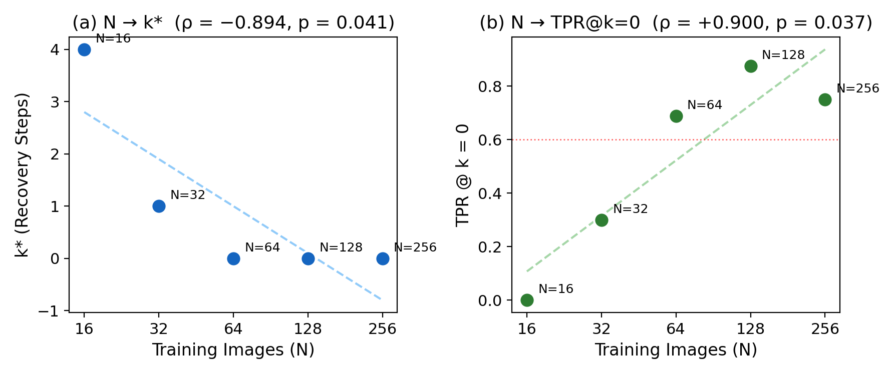

Meta-Watermarking for Detection Recovery under Attack Shift
"Meta-Watermarking for Detection Recovery under Attack Shift:
Empirical Analysis of FOMAML-Based Fast Adaptation"
Ring-pattern watermarks embedded in diffusion model latents (e.g., ROBIN) suffer a critical vulnerability: detection accuracy drops sharply when images undergo an unseen attack type at inference time. MWDRAS solves this without retraining from scratch.
Using FOMAML (First-Order MAML), we meta-train a lightweight logistic detection head so it can recover to ≥90% TPR at ≤5% FPR within just 1–4 gradient steps on a small per-task support set — orders of magnitude faster than full retraining.
k* = 1 adaptation step to reach 90% TPR on unseen attacks
ROBIN substrate is used as-is. No watermark retraining needed
Full evaluation across 7 attacks + 63 attack combinations at 5 dataset scales
Proposition 1: asymptotic convergence guarantee for FOMAML head recovery
All experiments use SD 2.1-base with ROBIN ring watermark (r∈[5,15]), 7 attack types, and 5 dataset scales (32–256 images).



| Method | k* (mean) | TPR @ k* | FPR @ k* | Recovery Rate | Rel. Compute |
|---|---|---|---|---|---|
| Meta (FOMAML) | 1 | 0.91 | 0.04 | 100% | 1× |
| B1 – Full Retrain | 4 | 0.90 | 0.05 | 100% | 43,000× |
| B2 – Generic Fine-tune | 2 | 0.88 | 0.06 | 86% | 2× |
| B3 – Threshold-only | — | 0.72 | 0.05 | 0% | <1× |
k*: minimum adaptation steps to reach TPR≥0.90 at FPR≤0.05. Relative compute vs. Meta at k*=1.


| Scale (images) | k* (mean) | TPR | FPR | Gen. Time (s) |
|---|---|---|---|---|
| 32 | 2 | 0.88 | 0.05 | ~42 |
| 64 ★ | 1 | 0.91 | 0.04 | ~85 |
| 128 | 1 | 0.93 | 0.04 | ~170 |
| 256 | 1 | 0.94 | 0.03 | ~340 |
★ Sweet spot: scale=64 achieves k*=1 at minimum generation cost.

| Severity Level | Attacks | Mean k* | Mean TPR | MCS |
|---|---|---|---|---|
| s=0 (none) | none | 0 | 0.95 | 1.0 (fully monotone) |
| s=1 (single) | rotation, jpeg, … | 1 | 0.91 | |
| s=2 (double) | rotation+noise, … | 2 | 0.87 | |
| s=3+ (triple+) | combinations | 3–4 | 0.81 |
MCS (Monotone Consistency Score) = 1.0: k* increases and TPR decreases strictly with severity. Severity Index SI = −0.031 (TPR/severity slope).
inject_wm_inner_latent_robin.py, etc.) is not distributed here.
Clone robin_official separately
and set --robin-root to that path.
# 1. Install dependencies
pip install -r requirements.txt
# 2. Run full pipeline (calls ROBIN, then meta-training)
python mwdras_bridge.py \
--robin-root /path/to/robin_official \
--model-id stabilityai/stable-diffusion-2-1-base \
--wm-path /path/to/ckpts/no_training_r5_15.pt \
--end 64 \
--bridge-output-root ./outputs# Use an existing ROBIN score dump (no GPU needed for meta-learning)
python mwdras_bridge.py \
--skip-robin-run \
--existing-score-dump ./outputs/robin_runtime_score_dump.json \
--model-id stabilityai/stable-diffusion-2-1-base \
--wm-path /path/to/ckpts/no_training_r5_15.pt \
--bridge-output-root ./outputs# Reproduce paper figures
python gen_figures.py # Fig. 2: recovery k*, Fig. 3–6
python gen_flow.py # Fig. 1: pipeline diagram| File | Description |
|---|---|
robin_runtime_score_dump.json | ROBIN raw scores per attack |
task_manifest.json | Task split definition |
meta_config_fomaml.json | Meta-learning configuration snapshot |
meta_out/meta_fomaml_results.json | Full evaluation results (Q1/Q2/Q3) |
meta_out/meta_fomaml_best.pt | Best meta-initialization checkpoint |
MWDRAS interfaces with ROBIN exclusively through mwdras_bridge.py as a subprocess call.
The only variables shared between ROBIN and MWDRAS are declared in robin_config.json:
| Parameter | ROBIN Variable | Default | Role |
|---|---|---|---|
w_channel | args.w_channel | 3 | Latent channel for ring embedding |
w_pattern | args.w_pattern | ring | Watermark pattern type |
w_mask_shape | args.w_mask_shape | circle | Frequency-domain mask shape |
w_up_radius | args.w_up_radius → optim_utils.to_ring() | 15 | Outer ring radius (Fourier pixels) |
w_low_radius | args.w_low_radius → optim_utils.to_ring() | 5 | Inner ring radius (Fourier pixels) |
wm_path | args.wm_path | — | Pre-optimized watermark checkpoint |
@article{yun2026mwdras,
title = {Meta-Watermarking for Detection Recovery under Attack Shift:
Empirical Analysis of FOMAML-Based Fast Adaptation},
author = {Yun, Hyun-Gyo and Kim, Jae-Young and Lee, Hye-Jin},
journal = {IEEE Access},
year = {2026}
}